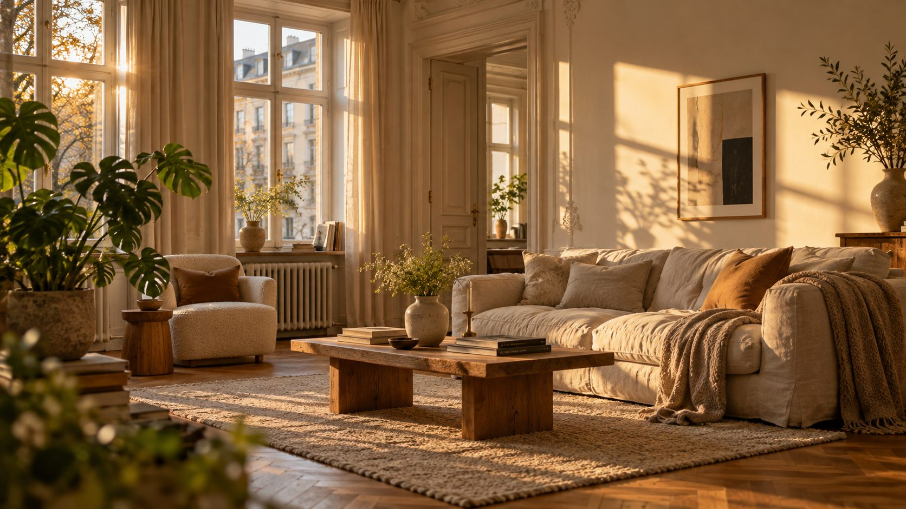

Mit Gefühl einrichten. Und mit Zollstock.
Finde deinen Wohnstil, miss richtig aus und kauf das Passende. Auch in der Mietwohnung.
Welcher Stil passt zu dir?
Fünf schnelle Fragen. Danach kennst du deinen Stil, seine Farben und die drei Stücke, mit denen du anfängst.
Sechs Stile und ihre Farben.
Jeder Stil hat eine eigene Farbkarte. Tippe einen an, um ihn kennenzulernen.
CognacSenfgelbPetrolOlivVintageGebraucht, mindestens 20 Jahre alt und mit Geschichte. Teak, Messing und warme Farben.KreideKieselTravertinGraphitModernKlare Linien, ruhige Farben, wenig Deko. Alles hat seinen Platz.SchneeBirkeNebelblauSalbeiSkandinavischHell, gemütlich und praktisch. Viel Weiß, helles Holz, weiche Stoffe.ReispapierTonMoosTuscheJapandiJapanische Ruhe trifft skandinavische Gemütlichkeit. Natur, Handwerk, viel Luft.BetonStahlRostLederIndustrialLoft-Gefühl mit Stahl, Holz und Leder vor rohen Wänden.SandRattanTerrakottaOliveBohoLässig und gesammelt: Rattan, Muster, Pflanzen und Handgemachtes.
Zur Seite wischen für alle sechs Stile.
Die meisten Einrichtungsfehler sind Maßfehler.
Ein zu kleiner Teppich lässt das Sofa verloren aussehen, eine zu kurze Gardinenstange macht das Fenster schmal. Mit ein paar Zentimetern Regel wird es stimmig.
- Teppich zu kleinMindestens die vorderen Füße aller Sitzmöbel gehören darauf.
- Gardinenstange zu kurzJe Seite 15 bis 20 cm breiter als das Fenster.
- Bilder zu hochDie Bildmitte gehört auf 140 bis 160 cm.
- Lampe zu hochÜber dem Esstisch 60 bis 80 cm über der Platte.
cm

Schön wohnen, ohne Ärger beim Auszug.
Was du in der Mietwohnung darfst, was du später zurückbauen musst und was ganz ohne Bohren geht.
- Streichen
- Erlaubt, auch farbig. Kräftige Farben müssen beim Auszug aber wieder neutral sein, entschied der Bundesgerichtshof.
- Bohren
- Dübellöcher in üblichem Umfang gehören zum normalen Gebrauch. In Fliesen möglichst in die Fugen.
- Auszug
- Was du eingebaut hast, baust du zurück, wenn der Vermieter es verlangt.
Alle Ratgeber.
Welcher Stil passt zu mir?Der Stil-Finder mit fünf Fragen, mit Farbkarte und Startliste.
Wohnstile im ÜberblickVintage, Modern, Skandinavisch, Japandi, Industrial und Boho.
Vintage einrichtenFundstücke erkennen, prüfen und mit Neuem kombinieren.
Modern einrichtenRuhige Räume mit klaren Linien und gutem Stauraum.
Raum-RechnerTeppich, Vorhang, Bilder, Lampe, Wandfarbe und Tapete auf den Zentimeter.
Schöner wohnen zur MieteStreichen, Bohren, Auszug: was erlaubt ist und was ohne Bohren geht.